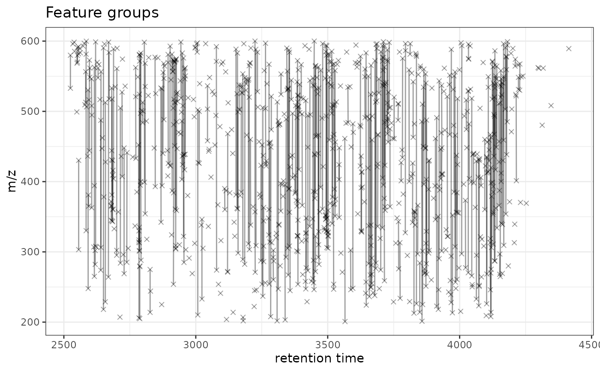

ggplot2 Version of plotFeatureGroups
Source:R/AllGenerics.R, R/gplotFeatureGroups-methods.R
gplotFeatureGroups.RdVisualizes feature groups by plotting features connected across retention time
and m/z dimensions. This is a ggplot2 implementation of XCMS's plotFeatureGroups()
function, enabling modern visualization and interactive plotting capabilities.
Usage
gplotFeatureGroups(
x,
xlim = numeric(),
ylim = numeric(),
xlab = "retention time",
ylab = "m/z",
pch = 4,
col = "#00000060",
type = "o",
main = "Feature groups",
featureGroups = character(),
...
)
# S4 method for class 'XCMSnExp'
gplotFeatureGroups(
x,
xlim = numeric(),
ylim = numeric(),
xlab = "retention time",
ylab = "m/z",
pch = 4,
col = "#00000060",
type = "o",
main = "Feature groups",
featureGroups = character(),
...
)
# S4 method for class 'XcmsExperiment'
gplotFeatureGroups(
x,
xlim = numeric(),
ylim = numeric(),
xlab = "retention time",
ylab = "m/z",
pch = 4,
col = "#00000060",
type = "o",
main = "Feature groups",
featureGroups = character(),
...
)Arguments
- x
An
XCMSnExporXcmsExperimentobject with feature grouping results.- xlim
Numeric vector of length 2 specifying retention time range. Default: numeric() (auto-calculate from data).
- ylim
Numeric vector of length 2 specifying m/z range. Default: numeric() (auto-calculate from data).
- xlab
X-axis label (default: "retention time").
- ylab
Y-axis label (default: "m/z").
- pch
Point character for feature markers (default: 4).
- col
Color for feature points and connecting lines (default: "#00000060").
- type
Plot type (default: "o" for overplotted points and lines).
- main
Plot title (default: "Feature groups").
- featureGroups
Character vector of feature group identifiers to plot. If empty (default), all feature groups are plotted.
- ...
Additional arguments passed to geom functions.
Value
A ggplot object showing features connected by lines within each feature group across retention time and m/z dimensions.
Details
The function:
Extracts feature definitions and their grouping information
Plots each feature as a point at (rtmed, mzmed)
Connects features within the same group with lines
Feature groups are created by
groupFeatures()which identifies features that likely represent the same compound (isotopes, adducts, etc.)
Feature groups must be present in the object before calling this function.
Run groupFeatures() first to create feature groups based on retention time,
m/z relationships, or other criteria.
See also
xcms::plotFeatureGroups() for the original XCMS implementation.
See MsFeatures::groupFeatures() for creating feature groups.
Examples
# \donttest{
library(xcmsVis)
library(xcms)
library(faahKO)
library(MsExperiment)
library(BiocParallel)
library(MsFeatures)
# Load example data
cdf_files <- dir(system.file("cdf", package = "faahKO"),
recursive = TRUE, full.names = TRUE)[1:3]
# Create XcmsExperiment and perform complete workflow
xdata <- readMsExperiment(spectraFiles = cdf_files, BPPARAM = SerialParam())
xdata <- findChromPeaks(xdata, param = CentWaveParam(), BPPARAM = SerialParam())
xdata <- groupChromPeaks(xdata, param = PeakDensityParam(
sampleGroups = rep(1, 3), minFraction = 0.5))
# Disable parallel processing to avoid warnings
register(SerialParam())
xdata <- adjustRtime(xdata, param = ObiwarpParam())
#> value 5
xdata <- groupChromPeaks(xdata, param = PeakDensityParam(
sampleGroups = rep(1, 3), minFraction = 0.5))
# Group features (identify related features like isotopes/adducts)
xdata <- groupFeatures(xdata, param = SimilarRtimeParam())
# Visualize feature groups
gplotFeatureGroups(xdata)
#> Warning: Removed 590 rows containing missing values or values outside the scale range
#> (`geom_path()`).

# Visualize specific feature groups only
gplotFeatureGroups(xdata, featureGroups = c("FG.001", "FG.002"))
#> Error: None of the specified feature groups found
# }